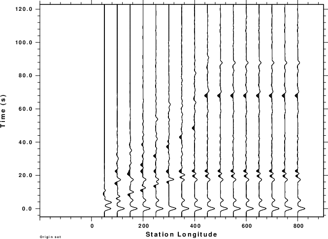

During a long career, V. Červený contributed much to
seismic ray theory. The initial impetus was for the determination
of crustal structure from refraction profiles. Initial codes were
for a 2-D model with corrections to represent 3-D propagation. One
program was named seis81 which is encapsulated in the
Computer Programs in Seismology (Herrmann, 2013) program cseis96.
The techniques are described n a number of publications
(Červený et al, 1977; Červený, 1985; Červený, 2010; Červený
and Pšenčík. 2011).
cseis96 differs from the original seis81 in that
the radiation patterns from point force and moment tensor sources
was corrected and in revised output formats. The
significant difference in making synthetics is that the formtion
of the time series is make by the program cpulse96 after cseis96
is run. The program cprep96 is a front end that
simplifies the preparation input for seis81. However
cseis96 can run more complicated models if the input data
set is created manually. The documentation for this is in PROGRAMS.330/VOLIX/DOC/seis81.txt.
As mentioned, seis81 was developed to interpret
refraction line observations. The codes use asymptotic ray theory
to make synthetics. The implication is that the codes cannot model
phenomena such as the classical refraction or a Rayleigh wave.
This tutorial investigates the use of these codes to make
synthetics that can be used to model teleseismic P-wave receiver
functions which assume a plane wave incident to the base of the
structure.
In the process of testing this use, updates were made on November
1, 2022 to the source codes in PROGRAMS.330/VOLIX/src,
specifically to cprep96, cseis96 and cpulse96.
Changes were made in format statements since the testing required
placing the source at a great depth to be able to approximate an
incident plane wave. The numerical integration to define the ray
path in cseis96 was upgraded to use double precision since
there were significant problems in shooting a ray to a given
receiver position when using very large source depths to
approximate incident plane waves. In addition, changes were made
to cpulse96 to permit a new way to define the time of the
first sample and to restrict the rays contributing to the
seismogram by specifying a range of acceptable ray parametes.
The ray tracing code works by shooting a set of rays through the
structure until a pair is found that bracket the horizontal
position of the receiver. At this point the angle of the ray
leaving the source is refined so that the ray hits the receiver
within a given accuracy. The ray so defined uses Snell's law
locally at each interface. The final step is to account for the
reflection and transmission at each interface and the geometrical
spreading.
The program cpulse96 was initially written assuming that
the source is to the left of the profile and waves propagate to
the right in the +x direction. Thus the RDD, RDS, RSS,. REX,
RVF and RHF Green's functions will be such that the motion
of a P wave incident at the surface will be up on the vertical
component and positive on the radial component or down and
negative if the initial motion is a dilation. As will
be show below, if the source is to the right of the array, then
the horizontal motion will be reversed. Although the
Green's fucntions have 'R' in their name, e.t., REX, the
motions should be interpreted as motions with respect to the
direction of the horizontal x-axis rather as radial with respect
to the source. This means that computation of receiver
functions for observations at distances less than the source
position (e.g., in the negative x-direction), must have the R
Green's function reversed, or if not, then the receiver function
inverted.
For ease of making profiles, the Sac header variables STLA and
EVLA will be undefined, e.g., -12345.0. STLO and EVLO will be the
horizontal positions of the receiver and source. The distance DIST
is defined at STLO - EVLO. Thus for sources to the right (more in
+x direction) representing ways in the negative x-direction, the
distance will be negative. Again this is for use in plotting. The
parameter LCALDA= false int he Sac header so that the distances
are nor recomputed from used int given latitudes and longitudes.
Given these header values, it is possible to use the gsac
commands prs STLO or prs DIST to make record
section profiles. in the examples below for the modeling of
observations above a subduction zone, prs STLO is used.
Since this tutorial is directed toward modeling teleseismic
P-wave receiver functions, only the EX Green's functions will be
used since these only emit P waves at the source.
The scripts for the examples below are contained in the file Cerveny.tgz. Download this file and
unpack using the command
gunzip -c Cerveny.tgz | tar xf -
Cerveny---
|--/Layer1-----
| |--/DOIT
| |--/DOPLT
| |--/DOCLEANUP
|
|--/Layer------
| |--/DOIT
| |--/DOPLT
| |--/DOCLEANUP
|
...
Note the names of the subdirectories. These will be the headings of
each of the examples given below. Thus if an example has the heading
Layerb, then the computational scripts will be in Cerveny/Layerb.
Since the objective of this tutorial is to model teleseismic
P-wave receiver functions for observations above a subduction
zone. There are some caveats.
First cseis96 is 2-D code. Thus a subduction zone is modeled as an infinitely long 2-D structure and the source and receivers are on a line perpendicular to strike. If this were not true, then 3-D code would be required. The next limitation is that the receiver function analysis assumes a plane wave incident at the base of the structure while cseis96 uses a point source. If the point source is placed deep enough, then the incident wave field may be assumed to approximate a plane wave. However some experimentation is required to test this assumption.
The following sections consider a suite of models, ranging from a
single layer over a halfspace model to a complex subduction
zone. For the plane layered halfspace models,
the synthetics and receiver functions can be compared to more
exact synthetics derived using the hspec96 and rftn96
codes. The receiver functions computed using hrftn96
can be compared to those obtained by running saciterd with
the horizontal and vertical component synthetics derived
from cseis96.
The user has a choice when trying to model teleseismic waves incident from the right or the left of the structure. One can fi the structure and make separate computations for with sources to the left and the right, or one can have the source to the left, but two models, were are reflections of the other. Some experimentation in defining the source position for receiver function analysis, since one is interested in a certain set of ray parameters from the source (s/km) that reach the station. This will be illustrated in the examples.
in the examples below for the subduction model, the model extends
down to about 300 km, but the source depth is 16000 km. Because of
the different vertical extents, it is acceptable to ignore the
upper structure to define the horizontal offset of the source in
order for a given ray parameter to "hit" the receiver. A simple
program ptoradian is provided to give an acceptable range
of angles that cseis96 should use for efficient
computations.
The program cprep96 prepares the data set for the cseis96
program by creating the file cseis96.dat. The format
of that file is given in PROGRAMS.330/VOLIX/DOC/seis81.txt.
The command line flags are seen by the command cprep96 -h
Usage: cprep96 -M model [-DOP] [-DOSV] [-DOSH] [-DOALL] [-DOCONV] [-DOREFL] [-DOTRAN] [-DEBUG] [-DENY deny ]
[-R reverb] [-N maxseg] [-HS sourcez] [-XS sourcex] -d dfile
-M model (default none ) Earth model file name
-N nseg (default 12 ) Maximum number of ray segments
-DOP (default false) Generate P ray description
-DOSV (default false) Generate SV ray description
-DOSH (default false) Generate SH ray description
-DOALL (default false) Generate P, SV, SH ray description
-DOCONV (default false) Permit P-SV conversions
-DOREFL (default false) P-SV conversions on reflection
-DOTRAN (default false) P-SV conversions on transmission
-DENY (default none ) file with layer conversion denial
-R reverb (default none ) file with maximum number of multiples in layer
-HS sourcez(default 0.0 ) source depth
-XS sourcex(default 0.0 ) source x-coordinate
-d dfile (default none ) distance file
dfile contains one of more lines with following entries
DIST(km) DT(sec) NPTS T0(sec) VRED(km/s)
first time point is T0 + DIST/VRED
VRED=0 means infinite velocity though
-? (default none ) this help message
-h (default none ) this help message
The importance of the -XS sourcex command line flag is
illustrated in Figure 1. This figure shows the ideal ray paths to
each receiver associated with an incident plane wave. Since cseis96
can only use point sources, it is assumed that the point source
(red circle) is at a depth such that the wavefront is effectively
planar. To preserve the ray geometry, the source must be
moved horizontally as the receiver position changes.
The -R reverb is useful to reduce the number of rays considered. The format is simple, a list of layer number - bounce pairs, e.g.,
1 3
2 3
3 3
4 1
which means, for example that at most 3 ray segments are
permitted in layer 2. For P-SV waves this would permit
8 rays, e.g., PPP, PPS, PSP, PSS, SSS, SSP, SPS and
SPP. If this option is not ste the cprep96 may
generate a lot of rays, perhaps 40,000 for a 4 layer model.
The format for cseis96.dat is given in the
aforementioned seis81.txt. Just before the ray description
there is a line created by cprep96 which reads
1.0000 3.1416 -0.0628 -3.1416 -3.1416 0.0628 3.1416 0.0010
The documentation for this line is
12) One card, quantities that control the basic system of initial
c angles in the two-point ray tracing,etc.
c dt,amin1,astep1,amax1,amin2,astep2,amax2,ac format(8f10.5)
c dt... time step in the integration of the ray-tracing
c system. dt should be greater than zero.
c If dt.lt.0.00001, then dt=1.
c amin1,astep1,amax1... determine the system of initial
c angles for primary reflected waves (and possibly
c for other manually generated elementary waves,the
c first element of which strikes the interface situ-
c ated below the source)
c amin2,astep2,amax2... determine the system of initial angles
c for the direct waves (and possibly for other manually
c generated elementary waves,the first element of
c which strikes the interface above the source).
c ac... required accuracy of integration of the ray tracing
c system. Recomended values: 0.0001 - 0.001.
You may wonder why the limits in the example line are π to -π and
-π to π. The code permits velocity gradients. Thus if velocity
increases with depth and one wanst a ray from the source to a
receiver above the source, the ray will go upward at short
distances and downward for large horizontal distances. The
range given here covers all possibilities. However examining all
possibilities is time consuming. For the purpose of modeling
teleseismic P waves, this line will be changed to make the
computations more efficient
Following this is the ray description for each ray
0 2 2 1which represent the rays P2P1, S2P1, P2S1 and S2S1, respectively. In this notation the 0 indicates that an acceptable ray can go up or down from the source, the initial 2 says that there are two ray segments, which is followed by a layer number and whether the ray of P (positive) or S (negative).
0 2 -2 1
0 2 2 -1
0 2 -2 -1
The next program that is executed is cseis96. Its command
lines are obtained by executing cseis96 -h which gives
Usage cseis96 [-v] [-P] [-?] [-h]
-v (default false) verbose output
-R (default false) generate file for CRAY96
-? (default false) this help screen
-h (default false) this help screen
The output of this program consists of the file cseis96.amp which
is used by cpulse96 and cseis96.trc if cseis96
-R flag is run. The cseis96.try is
used by cray96.
The program cray96 plots the structure and the
individual rays, with colors indicating P or S segments.
This requires the use of the -R flag with cseis96.
As will be seen below, such a plot can be very complicated, and it
is recommended that only one receiver position be considered. This
used the output contained in the file cseis96.trc, whh can
be very largeThe command line defines the boundaries for the plot.
Usage: cray96 -XMIN xmin -XMAX xmax -ZMIN zmin -ZMAX zmax -vThis program is very informative if there is only one distance plotted. If there are many distances, then one will get a idea of the range of ray paths that reach the stations.
-XMIN [xmin] (default 0) : Minimum X for plot
-XMAX [xmax] (default=400.0) : Maximum X for plot
-ZMIN [zmin] (default=0.0) : Minimum Z for plot
-ZMAX [zmax] (default = 50.0) : Maximum Z for plot
-v (default = false) : verbose output
-? (default = false) : This help screen
-h (default = false) : This help screen
Finally the program cpulse96 uses the cseis96.amp file
created by cseis96 to make the synthetics. The
command line options of this program are seen by executing the
command
cpulse96 -h. The output of this program the in the ASCII file96
format which can be converted to Sac files using f96tosac -B.
USAGE: cpulse96 [ -v ] [ -t -o -p -i ] -a alpha -l L [ -D -V -A] [-F rfile ] [ -m mult] [ -OD -OV -OA ] [-Z]
[-Q] [-DELAY delay [-EQEX -EXF -ALL] [ -PMIN pmin -PMAX pmax ] [-?] [-h]
-v Verbose output
-t Triangular pulse of base 2 L dt
-p Parabolic Pulse of base 4 L dt
-l L (default 1 )duration control parameter
-D Output is ground displacment
-V Output is ground velocity (default)
-A Output is ground acceleration
-F rfile User supplied pulse
-m mult Multiplier (default 1.0)
-OD Output is ground displacement
-OV Output is ground velocity
-OA Output is ground acceleration
-Q (default false) do causal Q
-DELAY delay (default use t=t0+x/vred for first sample,
else use delay seconds before the first arrival
-EXF (default) Explosion/point force green functions
-EQEX Earthquake and double couple green functions
-ALL Earthquake, Explosion and Point Force
-Z (default false) zero phase triangular/parabolic pulse
-PMIN pmin -PMAX pmax
If pmin and pmax have the same sign, then rays
with ray parameter |pmin|<= p <=|pmax| are used.
A positive sign means a ray from source
propagates in the +x direction, and a negative
in the -x direction
-? Write this help message
-h Write this help message
As mentioned above, the trace header fields have LCALDA=false, STLA=-12345, STLO=-12345, STLO= station x-coordinate, EVLO= station x-coordinate. Thus one can plot a record section of receiver positions in gsac using the command prs stlo .
The code update of November 1, 2022 added the -DELAY delay and -PMIN pmin -PMAX pmax command line flags. The reason for the -DELAY delay is as follows. The specification of desired horizontal distances in the dfile used by cprep96 consists of lines containing the following
DIST(km) DT(sec) NPTS T0(sec) VRED(km/s)an example of which is
first time point is T0 + DIST/VRED
00.0 0.125 1024 -10.0 6.0For the emulation of the teleseismic arrival, which will be approximated by placing the point source at a large depth, one would have to manually change the TO so some large value and have VRED= 0.0. The -DELAY delay option says to start the synthetics delay seconds before the first arrival.
10.0 0.125 1024 -10.0 6.0
20.0 0.125 1024 -10.0 6.0
model.dThis output does not have any information about the ray identified by the ray number. That information is contained in the file cseis96.dat,.
10
0.00000 200.00000 0.00000 10.00000 Source is at (0,200)
0.1000E+02 0.1250E+00 1024 -0.1000E+01 0.6000E+01 Distance 1
0.2000E+02 0.1250E+00 1024 -0.1000E+01 0.6000E+01 Distance 2 0.3000E+02 0.1250E+00 1024 -0.1000E+01 0.6000E+01
0.4000E+02 0.1250E+00 1024 -0.1000E+01 0.6000E+01
0.5000E+02 0.1250E+00 1024 -0.1000E+01 0.6000E+01
0.6000E+02 0.1250E+00 1024 -0.1000E+01 0.6000E+01
0.7000E+02 0.1250E+00 1024 -0.1000E+01 0.6000E+01
0.8000E+02 0.1250E+00 1024 -0.1000E+01 0.6000E+01
0.9000E+02 0.1250E+00 1024 -0.1000E+01 0.6000E+01
0.1000E+03 0.1250E+00 1024 -0.1000E+01 0.6000E+01
1 10 0.3727E+02 0.4561E-02 0.7823E-02 0.3142E+01 0.0000E+00-0.1107E+01 1 0.2800E+01 0.6000E+01 0.0000E+00 0.2800E+01 0.6000E+01
1 9 0.3655E+02 0.4284E-02 0.8160E-02 0.3142E+01 0.0000E+00-0.1148E+01 1 0.2800E+01 0.6000E+01 0.0000E+00 0.2800E+01 0.6000E+01
1 8 0.3590E+02 0.3963E-02 0.8487E-02 0.3142E+01 0.0000E+00-0.1190E+01 1 0.2800E+01 0.6000E+01 0.0000E+00 0.2800E+01 0.6000E+01
The output here are
ray number - ray one
distance number - 10 means here means the 10'th distance entry, which is 100 km here
horizontal amplitude - these are used to make the synthetic
vertical amplitude
horizontal phase
vertical phase
pnew - For the first entry this is -1.107 radians, or and angle of 63.44 degrees measured upward
from the horizontal. This is equivalent to an incident angle of 90 - 64.44 = 25.56 degrees (true is 26.56)
There is a rounding error in the presentation of -0.1107E+01. mwave 1 means ray leaves the source as P
ros Source density is 2.8 gm/cm3
vels Velocity of ray type, e.g., P, at source is 6.00 km/s
sumtq
rsrf Density at receiver 2.8 gm/cm3 vsrf Velocity at receiver to this ray is 6.00 km/s
saciterd -FN 0010002000.REX -FD 0010002000.ZEX -RAYP 0.0745 -D 10 -ALP 1.0which creates the Sac file decon.out. Also compute the theoretical using hrftn96 with the command
hrftn96 -M model.d -NSAMP 1024 -DT 0.125 -ALP 1.0 -P -RAYP 0.0745 -D 10
(cd Layer1; DOIT;DOPLT;DOCLEANUP)
(cd Layer2;DOIT; DOPLT;DOCLEANUP)
(cd Layer3;DOIT; DOPLT;DOCLEANUP)
(cd NsubductionReverbF/;DOIT;DOPLT;DOSACITERD;DOREC)
(cd NsubductionReverbR/;DOIT;DOPLT;DOSACITERD;DOREC)
(cd DOCMPRFTN;DOCMP)
This discusses running the code and also addresses the ability of
this ray tracing code to approximate incident plane waves.
Everything is in Layer1
Here the ability to filter rays by ray parameter is done by
modifying the cseis96.dat file.
Everything is in Layer2
Compared to the Layer3 example, these computations are faster since only a few rays are computed. In the Layer3 example, all rays are computed using cseis96 and the results are filtered.
Here the ability to filter rays by ray parameter is done by the
command line of cpulse96.
Everything is in Layer3
The initial test model is based on the image image from https://www.chegg.com/homework-help/questions-and-answers/figure-56-generalized-east-west-profile-center-nazca-plate-eastern-side-andes-mountains-ho-q52257549
. The model used here is shown in the next figureThe layer boundaries use a simple format that is described in the tutorial at PROGRAMS.330/DOC/OVERVIEW.pdf/cps330o.pdf. Thus the layering consists of linear segments.
NOTE: This is not a restriction of cseis96. The layering can be specified to be smoother by uaing cubic splines - see the documantation at PROGRAMS.330/VOLIX/DOC/seis81.txt.
To create synthetics to emulate teleseismic arrivals and for computational efficiency, the processing scripts will select a target x-coordinate, xrec, for the station. It will then be neceasary to specifiy the source location, e.g., (xsrc, zsrc) where the zsrc is much larger than the structure thickness. In this case a simple approximation is that the horizontal offset from the source will be xoffset =zsrc tan ( p V) where p is the ray parameter of the teleseismic arrival and V is the P-velocity at the source depth. If the ray is propagating in the +x direction, then xsrc = xrec - xoffset. If the ray is propagating in the -x direction, e.g., a reverse profile, then xsrc = xrec + xoffset.
To facilitate the specification of the range of acceptable angles for the Cerveny code, a simple Fortran program was written. If the source depth or velocity change, just modify in the definitions at the beginning of the code. The code, ptoradian.f , compilation and output are as follow:
program ptoradian
c-----
c This program considers at range of teleseismic
c ray parameters typically observed. It then
c converts the ray parameters to angles in radians
c for use with the Cerveny code. In addiiton
c it gives the horizontal offset for a given source
c depth.
c
c It is assumed tha tht source depth is much greater than
c the thickness of the structure being modeled.
c-----
c define the velocity of the P wave at
c the source depth
c-----
vel=8.5
c-----
c define the source depth deemed sufficient for a plane-wave
c approximation
c-----
depth = 16000.0
call bdoit(0.045,0.055,vel,depth,.true.)
call bdoit(0.055,0.065,vel,depth,.false.)
call bdoit(0.065,0.075,vel,depth,.false.)
end
subroutine bdoit(plow,phgh,vel,depth,lprinthead)
real plow, phgh, vel, depth
logical lprinthead
real anglow, anghgh, angmid, thetamid
real xoff
real pi2
if(lprinthead)then
write(6,1)depth,vel
endif
1 format(' Mapping of ray parameter range to horizontal offset ',
1'and ray angles in radians'/
2' for source depth of',f10.2,' and velocity of ',f10.3,' km/s'/
3' p range (s/km) Theta Xoffset Forward Rays (+x) ',
4' Reverse Rays (-x)')
pi2 = 3.1415927/2.0
call getang(plow,vel,anglow)
call getang(phgh,vel,anghgh)
angmid = 0.5*(anghgh + anglow)
thetamid = angmid * 180.0 / 3.1415927
c-----
c the horizontal offset is x=depth*tan(angmid)
c-----
xoff = depth*tan(angmid)
c-----
c get the angles in radians for the forward and reverse
c profiles
c The Cerveny code measures angles with respect to the
c horizontal. Upward rays are negative.
c Rays in the +x direction, the forward direction, will
c have angles in the range [0, -pi/2].
c Rays in the -x direction, the reverse direction, will
c have angles oin the range [-pi/2, -pi]
c-----
flow = -pi2 + anghgh
fhgh = -pi2 + anglow
rlow = -pi2 - anglow
rhgh = -pi2 - anghgh
write(6,2)plow,phgh,thetamid,xoff,flow,fhgh,rlow,rhgh
2 format('[',f6.3,' to',f6.3,']',f7.3,f10.3,5x,
1 2('[',f10.4,' to',f10.4,']',5x))
return
end
subroutine getang(p,vel,ang)
real p, vel, ang
real pi2
pi2 = 3.1415927/2.0
ang = asin(p*vel)
return
end
gfortran ptoradian.f
a.out
Mapping of ray parameter range to horizontal offset and ray angles in radians
for source depth of 16000.00 and velocity of 8.500 km/s
p range (s/km) Theta Xoffset Forward Rays (+x) Reverse Rays (-x)
[ 0.045 to 0.055] 25.180 7522.338 [ -1.0843 to -1.1783] [ -1.9633 to -2.0573]
[ 0.055 to 0.065] 30.705 9502.150 [ -0.9854 to -1.0843] [ -2.0573 to -2.1562]
[ 0.065 to 0.075] 36.572 11870.596 [ -0.8795 to -0.9854] [ -2.1562 to -2.2620]
In the examples that follow, the 0.055-0.065 range of ray
parameter is considered.
By default cprep96 will compute all ray conversions, which
will create a huge number of rays. The -R reverb option to
cprep96 is used to restrict the number of boundings in the
layers of the model to 3,3,1 and 1, respectively. the 3
means that ion a given leyer, PPP, PPS, PSP, PSS, SSS, SSP, SPP
and SPP are considered, which should be sufficient for this study.
The following tutorials consider wave propagation with receiver
positions from 50 to 8000 km along the surface of the model above.
At 800 km, for the the forward model, the way interaction should
approximate what would be expected for a single layer over a
halfspace, which can be compared to the output of hrftn96
to test the code. This is why cseis96 computations were
extended to double precision when computing the ray from the
soruce to the receiver.
The synthetics for a forward profile are computed. In addition saciterd
is created to make a p-wave receiver function profile as a
function of the station longitude. Everything is in Forward
profile
The synthetics for a forward profile are computed. In addition saciterd
is created to make a p-wave receiver function profile as a
function of the Everything is in Reversed
profile
As expected the synthetics and receiver function show the effect
of the 2-D structure. It us useful to compare the RFTN plots
side-by-side:
|
|
 |
The traces look different in the 0 - 200 km range for the
station position. For this reversed profile one sees the arrivals
trapped within the wedge. The only disturbing feature is the shape
of the receiver function at about 20 sec after the first "bump".
To understand the difference, the following figure compares the
receiver functions generated by hrftn96 for the simple
single-layer over a halfspace (Simple.sac) and for a five layer
flat model (Layered.sac) corresponding to the flat subduction
structure at the right of the model. Finally the receiver
functions corresponding to the 2-D forward model at receiver
position 600 km are given in Forward600.sac while Reverse600.sac
is for the reversed profile. In performing this comparison the
reverse profile receiver function were multiplied by (-1) for
comparison, thus converting modtion in the (-x) direction to
radial with respect to the source.
Additional model studies can be performed. These synthetics show structural features well because of the small number of layers and the sharp velocity contrasts. If there are gradients, then features will become less obvious.
Charles Langston has a paper in the Bulletin, Seismological
Society of America in 1977 on receiver functions in the Pacific
Northwest of the U.S. This may be a good early reference.
Červený, V., I. A. Molotkov, and I. Pšenčík, 1977, Ray Method in Seismology. Praha: Universita Karlova.
Červený, V. (1985). Seismic Ray Theory, DOI:
10.1007/0-387-30752-4_134
Červený, V. (2010). Seismic Ray Theory, Cambridge University
Press,
https://doi.org/10.1017/CBO9780511529399
Červený, V. and I. Pšenčík (2011). Seismic ray theory, http://sw3d.cz/papers.bin/r20vc1.pdf, 24pp.
Herrmann, R. B. (2013) Computer programs in seismology: An
evolving tool for instruction and research, Seism. Res. Lettr. 84,
1081-1088, doi:10.1785/0220110096
Langston, C. A. (1977). The effect of planar dipping structure on
source and receiver responses for a constant ray parameter, Bull.
Seism. Soc. Am. 67, 1029-1050, https://doi.org/10.1785/BSSA0670041029